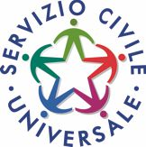

Calendari colloqui
I COLLOQUI PER LE SELEZIONI DEI CANDIDATI AVRANNO LUOGO PRESSO I LOCALI DELL'ISTITUTO UBICATI IN PALERMO VIA GIOVANNI EVANGELISTA DIBLASI N. 82, ECCETTO I COLLOQUI DELLE SEDI DI ERICE E MARSALA CHE AVRANNO LUOGO PRESSO I LOCALI UBICATI IN MARSALA VIALE DELLA GIOVENTÙ N. 59 (SEDE ANTEMAR), QUELLI DELLA SEDE DI MAZARA DEL VALLO CHE AVRANNO LUOGO PRESSO I LOCALI UBICATI IN MAZARA DEL VALLO VIALE OLANDA N. 13 (SEDE ANTEMAR). I CANDIDATI SONO IDENTIFICATI CON IL NUMERO DELLA DOMANDA PRESENTATA E LE DATE DI SVOLGIMENTO SONO INDICATE NEL SEGUENTE CALENDARIO:
Clicca sulla scritta per visualizzare il calendario dei colloqui di ogni singolo progetto
COLORINFORMA
COLORI DEL FUTURO
COLORI DEL PASSATO
SI RACCOMANDA LA MASSIMA ATTENZIONE ALLA DATA DEL COLLOQUIO E SI RICORDA CHE IL CANDIDATO CHE NON SI PRESENTA AL COLLOQUIO NEI GIORNI STABILITI È ESCLUSO DALLA SELEZIONE PER NON AVER COMPLETATO LA RELATIVA PROCEDURA. IL CANDIDATO SPROVVISTO DI DOCUMENTO D'IDENTITÀ IN CORSO DI VALIDITÀ NON POTRÀ SOSTENERE IL COLLOQUIO E QUINDI SARÀ CONSIDERATO RINUNCIATARIO. NELL'ATTESA DEI COLLOQUI VI CONSIGLIAMO DI VISITARE LE ALTRE PAGINE WEB CHE VI PERMETTERANNO DI ACQUISIRE UNA MAGGIORE CONOSCENZA DEL NOSTRO ISTITUTO.
Proroga dei termini per la presentazione delle domande al Bando per la selezione di 65.964 operatori volontari
da impiegare in progetti di Servizio civile universale
Scadenza ore 14,00 16 aprile 2026
Con decreto del Capo del Dipartimento per le Politiche giovanili e il Servizio civile universale n. 386/2026 del 7 aprile 2026, è prorogato al 16 aprile 2026, ore 14:00, il termine di presentazione delle domande di servizio civile universale.

BANDO SERVIZIO CIVILE UNIVERSALE
Scadenza ore 14,00 8 aprile 2026
Gli aspiranti operatori volontari devono produrre domanda di partecipazione esclusivamente attraverso la piattaforma DOL:
https://domandaonline.serviziocivile.it
Puoi scegliere uno dei seguenti progetti dell'Istituto Figlie della Misericordia e della Croce:
Per ulteriori informazioni puoi inviare una mail a serviziocivile@figliemisericordiaecroce-comunicazioni.it